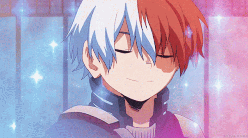

Happy Birthday
BRO!
May be, I normally don't say this !
But.
Its hard for me to express my feelings everytime that's why I express them on few moments. So,As you are going to be officially 18 now.Let's celebrate it then!
Let's Move to start then!

I don't know how I felt when I first saw you.
I don't even know how were you at that time.
What were you thinking about me at the time I was staring at you.
Probably you were thinking that "Oh! God Am I still in heaven!!! Who is she!Is she a fairy!"
I don't know and remember these things cause I was also a small child.
I always wish "Kaash tu merse 4,5 saal chota hota ". It was not kunki "Me teko bhut maarti" but
because to know how I felt when I first saw you.
May be If tu merse kafi chota hota to ,May be I can become the most admirable person of your life!
kher!
Let's continue where we were.........
The first thing I remembered about you is You asking me questioning about mummy's appearance and
I don't even know it was in real or not.
I don't know what was the first thing you remember about me.How many memories you have with me!
Let me share few which I had in my mind.
Sharing whole day things with each other before sleeping.
Stealing Bourbon from slap and eating it chance by chance underneath the bed.
Playing at terrace when light goes!
Rattafication of table and you always get more marks than me in that rattafication.
Me believing in your gadget things and that flying one especially.
Purchasing random eatables from joshi uncle ki dukaan by the money we took from any places of house.
Never gona apart promises.
Growing up was really too fast!!!
When you say:Di,Tu sundar lag rhi,It really boost my confident.
When you say You can do it for anything ,It help me overcome my fear of loosing.
It made me feel worth when you used to share every thing with me.
Being your shield in our childhood made me feel strong.
Seeing you growing up many mischivious habits made me laugh.
Your achievements used to made me proud.
Many achievements are more to achieve now!
You know what the most touched line of my life connected with you is?
Take me with you as Dhahez when you
leave the house after marraige.I used to feel more loved!
I don't know what you think about me,But! I feel so confident about you! I feel blessed to have you in my Life. I know you are capable of achieving anything in your life you just have to belive yourself.
I love you a lot.
I will always love you alot.